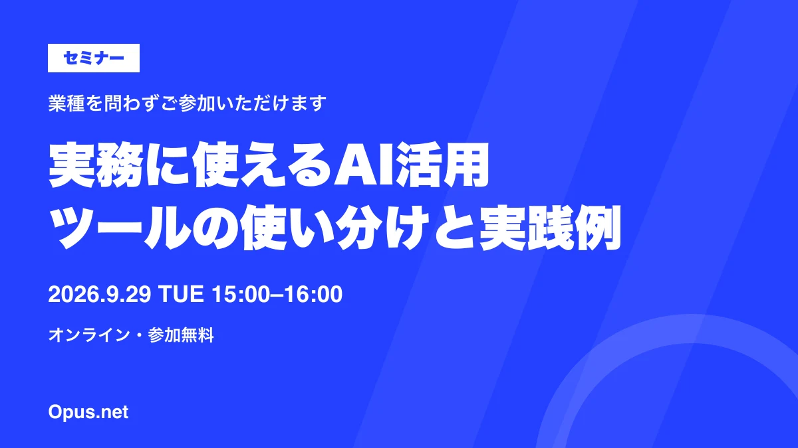

2026.09.27
9/29開催：業務に役立つAIツールの使い分け・活用セミナー

2026年9月29日（火）、「実務に使えるAI活用無料セミナー」をオンラインで開催します。業種を問わずご参加いただけます。
仕事で活かせるAI活用例を60分で紹介
主要AIツールの使い分けから、文章・資料の作成や情報整理など、日々の仕事に取り入れられる活用例までをご紹介します。AIをこれから仕事で使ってみたい方や、使い方を整理したい方に向けた60分のセミナーです。
開催概要
- 日時
- 2026年9月29日（火）15:00〜16:00
- 開催形式
- オンライン
- 参加費
- 無料
- 対象
- AIの仕事での使い方を知りたい方（業種不問）
- 主催
- 株式会社Opus.net
受付状況や最新のご案内は、申込ページをご確認ください。